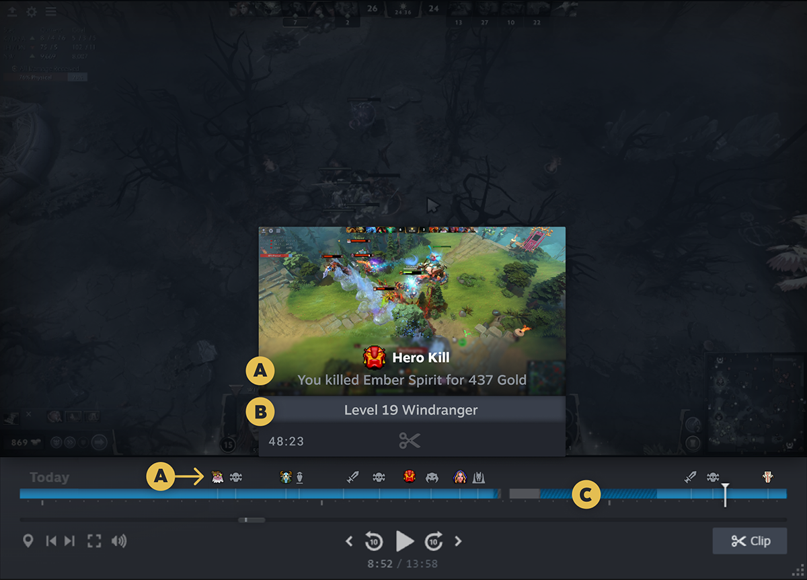

Timeline¶
Functions that allow the game to add events to the timeline that is displayed alongside recorded video.
Due to the experimental nature of Steam Timeline (currently), all extension functions return a boolean. If it's true, it means that the Steam Timeline API is available and the call was made. If it's false, it means that the Steam Timeline API is not available, the Steam Client is probably too old or not a Beta.
The (A), (B) and (C) marks in the function documentation refer to the parts of the Diagram image below.
Diagrams:

Functions¶
The following functions can be used to access Steam Timeline from within GameMaker:
- steam_timeline_set_state_description
- steam_timeline_clear_state_description
- steam_timeline_add_event
- steam_timeline_start_event
- steam_timeline_update_event
- steam_timeline_end_event
- steam_timeline_remove_event
- steam_timeline_event_recording_exists
- steam_timeline_game_phase_start
- steam_timeline_game_phase_end
- steam_timeline_game_phase_set_id
- steam_timeline_game_phase_add_tag
- steam_timeline_game_phase_set_attribute
- steam_timeline_game_phase_open_overlay
- steam_timeline_game_phase_recording_exists
- steam_timeline_set_game_mode
Constants¶
This section also provides the following constants to use with the functions:
steam_timeline_set_state_description¶
Sets a description (B) for the current game state in the timeline. These help the user to find specific moments in the timeline when saving clips. Setting a new state description replaces any previous description.
Examples could include: - Where the user is in the world in a single player game - Which round is happening in a multiplayer game - The current score for a sports game
Syntax:
steam_timeline_set_state_description(description, timeDelta)
| Argument | Type | Description |
|---|---|---|
| description | String | A localized string in the game language |
| timeDelta | Real | The time offset in seconds to apply to this state change. Negative times indicate an event that happened in the past. |
Returns:
Example:
steam_timeline_set_state_description("Earned x10 points as Cirno", -seconds);seconds seconds ago.
steam_timeline_clear_state_description¶
Clears the previous set game state in the timeline.
Syntax:
steam_timeline_clear_state_description(timeDelta)
| Argument | Type | Description |
|---|---|---|
| timeDelta | Real | The time offset in seconds to apply to this state change. Negative times indicate an event that happened in the past. |
Returns:
Example:
steam_timeline_clear_state_description(-seconds);seconds seconds ago.
steam_timeline_add_event¶
Use this to mark an event (A) on the Timeline. The event can be instantaneous or take some amount of time to complete, depending on the value passed in durationSeconds.
Syntax:
steam_timeline_add_event(icon, title, description, priority, startOffsetSeconds, durationSeconds, possibleClip)
| Argument | Type | Description |
|---|---|---|
| icon | String | The name of the icon to show at the timeline at this point. This can be one of the icons uploaded through the Steamworks partner Site for your title, or one of the provided icons that start with steam_. The Steam Timelines overview includes a list of available icons. |
| title | String | Title-provided localized string in the game language |
| description | String | Title-provided localized string in the game language |
| priority | Real or TimelineMaxPriority | Provide the priority to use when the UI is deciding which icons to display in crowded parts of the timeline. Events with larger priority values will be displayed more prominently than events with smaller priority values. This value must be between 0 and TimelineMaxPriority. |
| startOffsetSeconds | Real or TimelineMaxEventDuration | The time offset in seconds to apply to the start of the event. Negative times indicate an event that happened in the past. One use of this parameter is to handle events whose significance is not clear until after the fact. For instance if the player starts a damage over time effect on another player, which kills them 3.5 seconds later, the game could pass -3.5 as the start offset and cause the event to appear in the timeline where the effect started. |
| durationSeconds | Real or TimelineMaxEventDuration | The duration of the event, in seconds. Pass 0 for instantaneous events. The final duration of the event cannot be larger than TimelineMaxEventDuration. |
| possibleClip | TimelineEventClipPriority | Allows the game to describe events that should be suggested to the user as possible video clips. |
Returns:
Example:
steam_timeline_add_event(
"steam_achievement", // default steam_ icon name
"Rensenware", // this should be in the user's preferred language
"Scored 0.2 bln pts. in LUNATIC mode", // this should be in the user's preferred language
100, // between 0 and steam_timeline_max_timeline_priority inclusive
-1.0, // this event happened one second in the past
10.0, // this event took 10 seconds
steam_timeline_clip_priority_standard // you might want to clip this awesome event
);steam_timeline_start_event¶
Use this to mark the start of an event (A) on the Timeline that takes some amount of time to complete. The duration of the event is determined by a matching call to EndRangeTimelineEvent. If the game wants to cancel an event in progress, they can do that with a call to steam_timeline_remove_event.
The event in progress can be updated any number of times with steam_timeline_update_event.
Syntax:
steam_timeline_start_event(icon, title, description, priority, startOffsetSeconds, possibleClip)
| Argument | Type | Description |
|---|---|---|
| icon | String | The name of the icon to show at the timeline at this point. This can be one of the icons uploaded through the Steamworks partner Site for your title, or one of the provided icons that start with steam_. The Steam Timelines overview includes a list of available icons. |
| title | String | Title-provided localized string in the game language |
| description | String | Title-provided localized string in the game language |
| priority | Real or TimelineMaxPriority | Provide the priority to use when the UI is deciding which icons to display in crowded parts of the timeline. Events with larger priority values will be displayed more prominently than events with smaller priority values. This value must be between 0 and TimelineMaxPriority. |
| startOffsetSeconds | Real or TimelineMaxEventDuration | The time offset in seconds to apply to the start of the event. Negative times indicate an event that happened in the past. One use of this parameter is to handle events whose significance is not clear until after the fact. For instance if the player starts a damage over time effect on another player, which kills them 3.5 seconds later, the game could pass -3.5 as the start offset and cause the event to appear in the timeline where the effect started. |
| possibleClip | TimelineEventClipPriority | Allows the game to describe events that should be suggested to the user as possible video clips. |
Returns:
Example:
event_handle = steam_timeline_start_event(
"steam_achievement", // default steam_ icon name
"Rensenware", // this should be in the user's preferred language
"Scored 0.2 bln pts. in LUNATIC mode", // this should be in the user's preferred language
100, // between 0 and steam_timeline_max_timeline_priority inclusive
-1.0, // this event started one second in the past
steam_timeline_clip_priority_standard // you might want to clip this awesome event
);steam_timeline_update_event¶
Use this to update the details of an event that was started with steam_timeline_start_event.
Syntax:
steam_timeline_update_event(handle, icon, title, description, priority, startOffsetSeconds, possibleClip)
| Argument | Type | Description |
|---|---|---|
| handle | Real | The handle for a previously created event. |
| icon | String | The name of the icon to show at the timeline at this point. This can be one of the icons uploaded through the Steamworks partner Site for your title, or one of the provided icons that start with steam_. The Steam Timelines overview includes a list of available icons. |
| title | String | Title-provided localized string in the game language |
| description | String | Title-provided localized string in the game language |
| priority | Real or TimelineMaxPriority | Provide the priority to use when the UI is deciding which icons to display in crowded parts of the timeline. Events with larger priority values will be displayed more prominently than events with smaller priority values. This value must be between 0 and TimelineMaxPriority. |
| startOffsetSeconds | Real or TimelineMaxEventDuration | The time offset in seconds to apply to the start of the event. Negative times indicate an event that happened in the past. One use of this parameter is to handle events whose significance is not clear until after the fact. For instance if the player starts a damage over time effect on another player, which kills them 3.5 seconds later, the game could pass -3.5 as the start offset and cause the event to appear in the timeline where the effect started. |
| possibleClip | TimelineEventClipPriority | Allows the game to describe events that should be suggested to the user as possible video clips. |
Returns:
Example:
steam_timeline_update_event(
event_handle, // handle to a previously created event
"steam_achievement", // default steam_ icon name
"Rensenware", // this should be in the user's preferred language
"Scored 0.2 bln pts. in LUNATIC mode", // this should be in the user's preferred language
100, // between 0 and steam_timeline_max_timeline_priority inclusive
-1.0, // this event happened one second in the past
steam_timeline_clip_priority_standard // you might want to clip this awesome event
);steam_timeline_end_event¶
Use this to identify the end of an event that was started with steam_timeline_start_event.
Syntax:
steam_timeline_end_event(handle, endOffsetSeconds)
| Argument | Type | Description |
|---|---|---|
| handle | Real | The handle for a previously created event. |
| endOffsetSeconds | Real or TimelineMaxEventDuration | The time offset in seconds to apply to the start of the event. Negative times indicate an event that happened in the past. One use of this parameter is to handle events whose significance is not clear until after the fact. For instance if the player starts a damage over time effect on another player, which kills them 3.5 seconds later, the game could pass -3.5 as the start offset and cause the event to appear in the timeline where the effect started. |
Returns:
Example:
steam_timeline_end_event(
event_handle, // handle to a previously created event
-2.0, // this event ended 2 seconds ago
);steam_timeline_remove_event¶
Use this to remove a previously created event from the timeline.
Syntax:
steam_timeline_remove_event(handle)
| Argument | Type | Description |
|---|---|---|
| handle | String | The handle for a previously created event. |
Returns:
steam_timeline_event_recording_exists¶
Use this to determine if video recordings exist for the specified game phase. This can be useful when the game needs to decide whether or not to show a control that will call steam_timeline_game_phase_open_overlay.
This function operates asynchronously, which means that it does not immediately return the requested result. Instead, upon completion of the task, it will trigger the Steam Async Event.
Syntax:
steam_timeline_event_recording_exists(event_handle)
| Argument | Type | Description |
|---|---|---|
| event_handle | String | Handle of the event to check for recordings. |
Returns:
Triggers:
| Key | Type | Description |
|---|---|---|
| event_type | String | The string "steam_timeline_event_recording_exists" |
| success | Boolean | Whether or not the current task succeeded. |
| recording_exists | String | This is true if recording exists for the requested event handle. |
| event_id | Real | The handle of the event that was asked about. |
steam_timeline_game_phase_start¶
Use this to start a game phase. Game phases allow the user to navigate their background recordings and clips. Exactly what a game phase means will vary game to game, but the game phase should be a section of gameplay that is usually between 10 minutes and a few hours in length, and should be the main way a user would think to divide up the game. These are presented to the user in a UI that shows the date the game was played, with one row per game slice. Game phases should be used to mark sections of gameplay that the user might be interested in watching.
Game phases are started with steam_timeline_game_phase_start, and while a phase is still happening, they can have tags and attributes added to them with steam_timeline_game_phase_add_tag or steam_timeline_game_phase_set_attribute. Only one game phase can be active at a time.
Syntax:
steam_timeline_game_phase_start()
Returns:
Example:
steam_timeline_game_phase_start();steam_timeline_game_phase_end¶
Use this to end a game phase that was started with steam_timeline_game_phase_start.
Syntax:
steam_timeline_game_phase_end()
Returns:
Example:
steam_timeline_game_phase_end();steam_timeline_game_phase_set_id¶
The phase ID is used to let the game identify which phase it is referring to in calls to steam_timeline_game_phase_recording_exists or steam_timeline_game_phase_open_overlay. It may also be used to associated multiple phases with each other.
Syntax:
steam_timeline_game_phase_set_id(phase_id)
| Argument | Type | Description |
|---|---|---|
| phase_id | String | A game-provided persistent ID for a game phase. This could be a the match ID in a multiplayer game, a chapter name in a single player game, the ID of a character, etc. |
Returns:
Example:
steam_timeline_game_phase_set_id("Chapter I");steam_timeline_game_phase_recording_exists¶
Use this to determine if video recordings exist for the specified game phase. This can be useful when the game needs to decide whether or not to show a control that will call steam_timeline_game_phase_open_overlay.
This function operates asynchronously, which means that it does not immediately return the requested result. Instead, upon completion of the task, it will trigger the Steam Async Event.
Syntax:
steam_timeline_game_phase_recording_exists(phase_id)
| Argument | Type | Description |
|---|---|---|
| phase_id | String | A game-provided persistent ID for a game phase. |
Returns:
Triggers:
| Key | Type | Description |
|---|---|---|
| event_type | String | The string "steam_timeline_game_phase_recording_exists" |
| success | Boolean | Whether or not the current task succeeded. |
| phase_id | String | The phase ID that this result corresponds with. |
| longest_clip_ms | Real | The total length of the longest clip in this phase in milliseconds. |
| recording_ms | Real | The total length of the recordings in this phase in milliseconds. |
| clip_count | Real | The number of clips that include video from this phase. |
| screenshot_count | Real | The number of screenshots the user has from this phase. |
steam_timeline_game_phase_add_tag¶
Use this to add a game phase tag (F). Phase tags represent data with a well defined set of options, which could be data such as match resolution, hero played, game mode, etc. Tags can have an icon in addition to a text name. Multiple tags within the same group may be added per phase and all will be remembered. For example, steam_timeline_game_phase_add_tag may be called multiple times for a "Bosses Defeated" group, with different names and icons for each boss defeated during the phase, all of which will be shown to the user.
Syntax:
steam_timeline_game_phase_add_tag(name, icon, group, priority)
| Argument | Type | Description |
|---|---|---|
| name | String | Title-provided localized string in the game language. |
| icon | String | The name of the icon to show at the timeline at this point. This can be one of the icons uploaded through the Steamworks partner Site for your title, or one of the provided icons that start with steam_. The Steam Timelines overview includes a list of available icons. |
| group | String | Title-provided localized string in the game language. Tags within the same group will be shown together in the UI. |
| priority | Real or TimelineMaxPriority | Provide the priority to use when the UI is deciding which attributes to display. Attributes with larger priority values will be displayed more prominently than attributes with smaller priority values. This value must be between 0 and TimelineMaxPriority. |
Returns:
Example:
steam_timeline_game_phase_set_attribute("My attribute", "0/0/0", 0.3);steam_timeline_game_phase_set_attribute¶
Use this to add a game phase attribute (E). Phase attributes represent generic text fields that can be updated throughout the duration of the phase.
They are meant to be used for phase metadata that is not part of a well defined set of options. For example, a KDA attribute that starts with the value "0/0/0" and updates as the phase progresses, or something like a played-entered character name. Attributes can be set as many times as the game likes with steam_timeline_game_phase_set_attribute, and only the last value will be shown to the user.
Syntax:
steam_timeline_game_phase_set_attribute(attribute_group, attribute_value, priority)
| Argument | Type | Description |
|---|---|---|
| attribute_group | String | Title-provided localized string in the game language. |
| attribute_value | String | Title-provided localized string in the game language. |
| priority | Real or TimelineMaxPriority | Provide the priority to use when the UI is deciding which attributes to display. Attributes with larger priority values will be displayed more prominently than attributes with smaller priority values. This value must be between 0 and TimelineMaxPriority. |
Returns:
Example:
steam_timeline_game_phase_set_attribute("My attribute", "0/0/0", 0.3);steam_timeline_game_phase_open_overlay¶
Opens the Steam overlay to the section of the timeline represented by the game phase.
Syntax:
steam_timeline_game_phase_open_overlay(phase_id)
| Argument | Type | Description |
|---|---|---|
| phase_id | String | The game phase to show in the overlay. |
Returns:
Example:
steam_timeline_game_phase_open_overlay("Chapter I");steam_timeline_set_game_mode¶
Changes the color of the timeline bar (C). See TimelineGameMode for how to use each value.
Syntax:
steam_timeline_set_game_mode(mode)
| Argument | Type | Description |
|---|---|---|
| mode | TimelineGameMode | The mode that the game is in. |
Returns:
Example:
steam_timeline_set_game_mode(steam_timeline_game_mode_playing);TimelineGameMode¶
Represents the possible game mode tags a timeline can have (influences the color scheme).
These constants are referenced by the following functions:
| Member | Description |
|---|---|
steam_timeline_game_mode_invalid |
Invalid dummy value. |
steam_timeline_game_mode_playing |
Used when the player is fully loaded into the game and playing - for example inside the dungeon fighting monsters. |
steam_timeline_game_mode_staging |
Used when some loading action is happening ingame - for example player is in a multiplayer lobby or for when a dungeon is loading. |
steam_timeline_game_mode_menus |
Used when inside menus - for example the player adjusting settings or in a town buying items |
steam_timeline_game_mode_loading_screen |
Used for loading screens. |
steam_timeline_game_mode_max |
One past the last valid value. |
TimelineEventClipPriority¶
Represents the possible priority a timeline event can have. Where 'steam_timeline_clip_priority_featured' is higher than 'steam_timeline_clip_priority_standard'.
These constants are referenced by the following functions:
| Member | Description |
|---|---|
steam_timeline_clip_priority_invalid |
Invalid dummy value. |
steam_timeline_clip_priority_none |
This event is not appropriate as a clip. |
steam_timeline_clip_priority_standard |
The user may want to make a clip around this event. |
steam_timeline_clip_priority_featured |
The player will be likely to want a clip around event, and those clips should be promoted more prominently. |
TimelineMaxPriority¶
Represents the maximum possible priority a timeline event can have.
These constants are referenced by the following functions:
- steam_timeline_add_event
- steam_timeline_start_event
- steam_timeline_update_event
- steam_timeline_game_phase_add_tag
- steam_timeline_game_phase_set_attribute
| Member | Description |
|---|---|
steam_timeline_max_timeline_priority |
Maximum timeline event priority value. |
TimelineMaxEventDuration¶
Represents the maximum possible duration a timeline event can have.
These constants are referenced by the following functions:
- steam_timeline_add_event
- steam_timeline_start_event
- steam_timeline_update_event
- steam_timeline_end_event
| Member | Description |
|---|---|
steam_timeline_max_timeline_event_duration |
Maximum timeline event duration value. |